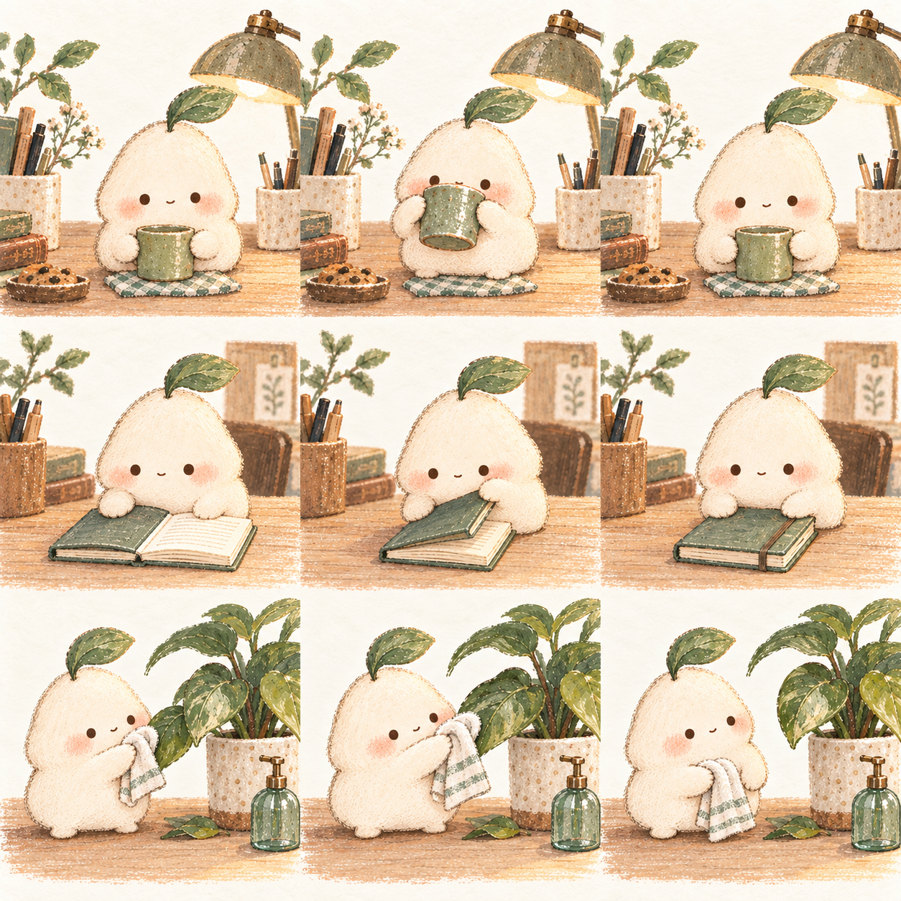
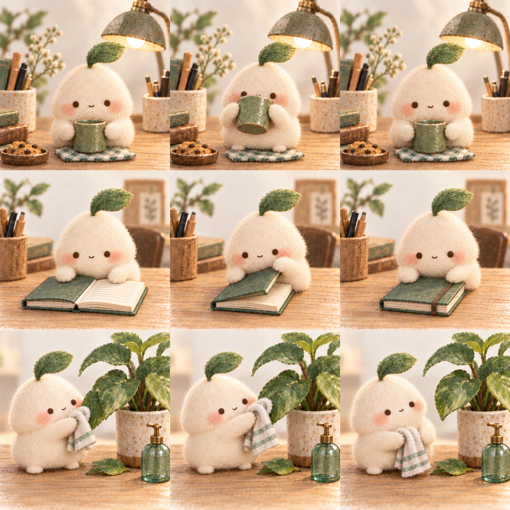

同一个小生命，同样的小动作。先感受，再说喜欢哪里。
纸张颗粒 · 色铅笔 · 不太齐整的边缘

羊毛纤维 · 柔软体积 · 微缩日常物件

不看文字，动作能认出来吗？三张图里，还像同一个小生命吗？停住的画面，你愿意让它留在桌面吗？
可以先说“我喜欢 A 的边缘，B 的体积”。下次只改一个变量：矮胖一点、眼睛低一点，或者道具少一点。保留前后对照，就能逐渐知道自己的偏好。
三张关键帧试映 · 每次 3 秒 · 不是流畅视频 · 尚未替换桌面默认形象。已知需要修整：背景及五官轻微漂移、合本子的封面结构、纸感擦叶子的前两帧差异。原始九格图和提示词均保留在项目内。
收藏逐篇阅读：6 篇已打开，阅读范围和来源见 阅读记录。本页离线运行，不联网，不保存你的选择。